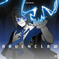
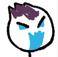
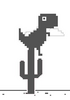
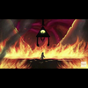
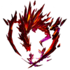

Crossover中心页
这是一件无可置疑的事实——The Backrooms自它诞生的第一天起便已经成为了互联网上供人“肆意发挥”的“东西”，而后室也绝非是闭关自守的概念。
不要害怕尝试！这将会是令人感到惊喜与疯狂的行为，那就是——
交叉同人crossover fanfiction
何为Crossover？这是一个写作风格，它是The Backrooms Wikidot与其他非Backrooms Wikidot的虚拟内容进行的交互，简而言之，你可以理解为“世界观融合”或“惊喜联动”。
符合以上条件的文章便可以加入“crossover”标签，无论是最常见的Backrooms × SCP还是其他联动项目都是被允许的，甚至是Backrooms Wikidot × Backrooms Fandom！
Just Do It !
所有crossover页面
| 名称 | 创建时间 | 字数 | 评论数 | 创建者 |
|---|---|---|---|---|
| Object C-14-E - “切行利刃” | 2023-07-06 01:46 | 9645 | 16 | AStormIsApproaching |
| 画外轩 | 2023-07-05 00:03 | 9825 | 18 | Mephis Mei |
| 后室团体球 | 2023-07-04 18:46 | 2241 | 12 | table-tech |
| 探索安布罗斯咖啡厅：咖啡是世间万物 | 2023-07-01 07:59 | 6869 | 12 | x1193 |
| 欢笑蜘蛛 | 2023-06-25 19:45 | 533 | 10 | di_ge |
| Level C-460 | 2023-05-02 20:18 | 2865 | 10 | scott-owl |
| Object C-255 -“空间包裹” | 2023-05-01 14:02 | 5252 | 9 | only a tree |
| 阿瑞斯之拳：赫尔墨斯、黑星与合作（其二） | 2023-03-03 11:48 | 4489 | 1 | vallerback |
| Object C-174 - “一封信” | 2023-02-26 10:15 | 4879 | 7 | di_ge |
| Entity C-122 | 2023-02-25 22:45 | 4937 | 8 | fljlus |
| Phenomenon C-71 - “镜厅” | 2023-02-19 17:56 | 1738 | 4 | x1193 |
| 后室与你：一份新手指南 | 2023-02-08 00:00 | 7957 | 8 | Pedder |
| 梅菲斯特·费特洛斯 | 2023-01-23 17:14 | 17647 | 6 | Mephis Mei |
| Object C-166 - “恶魔护照” | 2023-01-18 00:02 | 6751 | 8 | Eltrac |
| Level C-928 | 2023-01-13 09:07 | 6332 | 12 | Comeinplease |
| 后室漫游指南 | 2023-01-04 18:30 | 1365 | 7 | Ceciliat992 |
| Level C-427 | 2023-01-04 09:44 | 9854 | 4 | scott-owl |
| 尸宫 | 2022-12-20 09:51 | 240 | 44 | FWMango |
| Level C-612 | 2022-12-09 14:56 | 8916 | 6 | BrightWalking |
| PLS-A-90 - “常态绕转” | 2022-12-05 22:33 | 150 | 5 | zhangbowen55 |
| 版式：罗德岛档案 | 2022-11-26 00:33 | 30131 | 25 | TaRtaR0S |
| 邪恶双瞳 | 2022-11-20 23:50 | 3710 | 7 | NUKENAI SEIKEN CHAN |
| Phenomenon C-60 - “多元前厅理论” | 2022-11-14 21:40 | 4581 | 15 | STUDENT508 |
| 卡特斯先生 | 2022-11-14 18:04 | 8064 | 8 | Mephis Mei |
| 食蚜蝇博士 | 2022-10-23 20:12 | 4641 | 5 | Ceciliat992 |